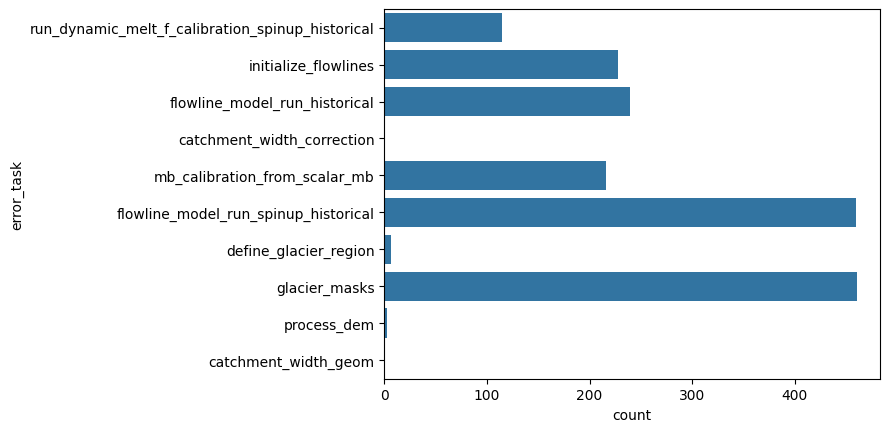

Error analysis of the global pre-processing workflow#
Here we reproduce the error analysis shown in Maussion et al. (2019) for the pre-processing part only, and for the glacier directories (version 1.6 and 1.4). The error analysis of user runs needs a separate handling, see the deal_with_errors notebook for more information.
Get the files#
We download the glacier_statistics files from the preprocessed directories folders, at the level 5. That is, we are going to count all errors that happened during the pre-processing chain.
from oggm import utils
import pandas as pd
import seaborn as sns
We will start with a preprocessed directory for OGGM v1.6 (W5E5 with centerlines):
# W5E5 centerlines
url = 'https://cluster.klima.uni-bremen.de/~oggm/gdirs/oggm_v1.6/L3-L5_files/2025.6/centerlines/W5E5/per_glacier_spinup/RGI62/b_080/L5/summary/'
# this can take some time
df = []
for rgi_reg in range(1, 19):
fpath = utils.file_downloader(url + f'glacier_statistics_{rgi_reg:02d}.csv')
df.append(pd.read_csv(fpath, index_col=0, low_memory=False))
df = pd.concat(df, sort=False).sort_index()
Analyze the errors#
sns.countplot(y="error_task", data=df);

"% area errors all sources: {:.2f}%".format(df.loc[~df['error_task'].isnull()].rgi_area_km2.sum() / df.rgi_area_km2.sum() * 100)
'% area errors all sources: 0.90%'
"% failing glaciers all sources: {:.2f}%".format(df.loc[~df['error_task'].isnull()].rgi_area_km2.count() / df.rgi_area_km2.count() * 100)
'% failing glaciers all sources: 0.81%'
We now look at the errors that occur already before applying the climate tasks and the historical run (i.e., before mb_calibration_from_scalar_mb and flowline_model_run_historical):
dfe = df.loc[~df['error_task'].isnull()]
dfe = dfe.loc[~dfe['error_task'].isin(['mb_calibration_from_scalar_mb','flowline_model_run_historical'])]
"% area errors before climate: {:.2f}%".format(dfe.rgi_area_km2.sum() / df.rgi_area_km2.sum() * 100)
'% area errors before climate: 0.66%'
"% failing glaciers all sources: {:.2f}%".format(dfe.loc[~dfe['error_task'].isnull()].rgi_area_km2.count() / df.rgi_area_km2.count() * 100)
'% failing glaciers all sources: 0.60%'
Although there are already many glaciers failing before the climate tasks, from a relative missing glacier area perspective, much less of the failing glacier area occurs. The reason is that the largest failing glaciers have mostly flowline_model_run_historical errors that only occur in the preprocessed directories level 4 or higher (after the climate tasks):
# 15 largest glaciers
df.loc[~df['error_task'].isnull()].sort_values(by='rgi_area_km2',
ascending=False)[['rgi_area_km2', 'error_task',
'error_msg']].iloc[:15]
| rgi_area_km2 | error_task | error_msg | |
|---|---|---|---|
| rgi_id | |||
| RGI60-01.13696 | 3362.656 | catchment_width_correction | GeometryError: (RGI60-01.13696) no binsize cou... |
| RGI60-13.43483 | 282.721 | flowline_model_run_historical | RuntimeError: CFL error: required time step sm... |
| RGI60-05.07854 | 148.642 | flowline_model_run_historical | RuntimeError: CFL error: required time step sm... |
| RGI60-17.01218 | 110.978 | flowline_model_run_historical | RuntimeError: CFL error: required time step sm... |
| RGI60-04.05681 | 66.959 | flowline_model_run_historical | RuntimeError: CFL error: required time step sm... |
| RGI60-10.00002 | 48.144 | glacier_masks | GeometryError: RGI60-10.00002 is a nominal gla... |
| RGI60-13.01430 | 43.094 | flowline_model_run_historical | RuntimeError: CFL error: required time step sm... |
| RGI60-15.04151 | 36.050 | flowline_model_run_historical | RuntimeError: CFL error: required time step sm... |
| RGI60-03.04079 | 35.752 | initialize_flowlines | RuntimeError: Altitude range of main flowline ... |
| RGI60-13.04943 | 34.599 | flowline_model_run_historical | RuntimeError: CFL error: required time step sm... |
| RGI60-02.02622 | 28.163 | flowline_model_run_historical | RuntimeError: CFL error: required time step sm... |
| RGI60-15.09500 | 23.457 | flowline_model_run_historical | RuntimeError: CFL error: required time step sm... |
| RGI60-13.42209 | 21.840 | flowline_model_run_historical | RuntimeError: CFL error: required time step sm... |
| RGI60-15.10180 | 19.829 | flowline_model_run_historical | RuntimeError: CFL error: required time step sm... |
| RGI60-13.43355 | 19.269 | flowline_model_run_historical | RuntimeError: CFL error: required time step sm... |
Example error comparison#
centerlines vs elevation bands:
# W5E5 elevation bands
url = 'https://cluster.klima.uni-bremen.de/~oggm/gdirs/oggm_v1.6/L3-L5_files/2025.6/elev_bands/W5E5/per_glacier_spinup/RGI62/b_080/L5/summary/'
# this can take some time
df_elev = []
# we don't look at RGI19 (Antarctic glaciers), because no climate available for CRU
for rgi_reg in range(1, 19):
fpath = utils.file_downloader(url + f'glacier_statistics_{rgi_reg:02d}.csv')
df_elev.append(pd.read_csv(fpath, index_col=0, low_memory=False))
df_elev = pd.concat(df_elev, sort=False).sort_index()
rel_area_elev = df_elev.loc[~df_elev['error_task'].isnull()].rgi_area_km2.sum() / df_elev.rgi_area_km2.sum() * 100
rel_area_cent = df.loc[~df['error_task'].isnull()].rgi_area_km2.sum() / df.rgi_area_km2.sum() * 100
print(f'% area errors from all sources for elevation band flowlines is {rel_area_elev:.2f}%'+'\n'
f'compared to {rel_area_cent:.2f}% for centerlines with W5E5')
% area errors from all sources for elevation band flowlines is 0.08%
compared to 0.90% for centerlines with W5E5
much fewer errors occur when using elevation band flowlines than when using centerlines!
-> Reason: fewer glacier_mask errors!
# you can check out the different error messages with that,
# but we only output the first 20 here
df_elev.error_msg.dropna().unique()[:20]
<StringArray>
[ 'AssertionError: ',
'ValueError: Trapezoid beds need to have origin widths > 0.',
'RuntimeError: Dynamic spinup raised error! (Message: Could not find mismatch smaller 1% (only 3.830621968716285%) in 30Iterations!)',
'RuntimeError: Dynamic spinup raised error! (Message: Could not find mismatch smaller 1% (only 1.5618782043033614%) in 30Iterations!)',
'RuntimeError: Dynamic spinup raised error! (Message: Could not find mismatch smaller 1% (only 1.2540517296976248%) in 30Iterations!)',
'RuntimeError: Dynamic spinup raised error! (Message: Could not find mismatch smaller 1% (only 1.4284036815180094%) in 30Iterations!)',
'RuntimeError: Dynamic spinup raised error! (Message: Could not find mismatch smaller 1% (only 3.7394690186221506%) in 30Iterations!)',
'RuntimeError: Dynamic spinup raised error! (Message: Could not find mismatch smaller 1% (only 1.8039816249736491%) in 30Iterations!)',
'RuntimeError: Dynamic spinup raised error! (Message: Could not find mismatch smaller 1% (only 3.783589617558415%) in 30Iterations!)',
'RuntimeError: Dynamic spinup raised error! (Message: Could not find mismatch smaller 1% (only 2.352518756008527%) in 30Iterations!)',
'RuntimeError: RGI60-01.24246: we tried very hard but we could not find a combination of parameters that works for this ref mb.',
'RuntimeError: RGI60-01.24248: we tried very hard but we could not find a combination of parameters that works for this ref mb.',
'RuntimeError: RGI60-01.24600: we tried very hard but we could not find a combination of parameters that works for this ref mb.',
'RuntimeError: RGI60-01.24602: we tried very hard but we could not find a combination of parameters that works for this ref mb.',
'RuntimeError: RGI60-01.24603: we tried very hard but we could not find a combination of parameters that works for this ref mb.',
'RuntimeError: Dynamic spinup raised error! (Message: Could not find mismatch smaller 1% (only 1.0013201728003613%) in 30Iterations!)',
'RuntimeError: RGI60-01.26517: we tried very hard but we could not find a combination of parameters that works for this ref mb.',
'RuntimeError: RGI60-01.26971: we tried very hard but we could not find a combination of parameters that works for this ref mb.',
'RuntimeError: Glacier exceeds domain boundaries, at year: 2016.8333333333333',
'RuntimeError: Dynamic spinup raised error! (Message: Could not find mismatch smaller 1% (only 1.960916757848703%) in 30Iterations!)']
Length: 20, dtype: str
Compare different climate datasets
comparing ERA5 vs GSWP3_W5E5 (using OGGM v1.6.3 2025.6 gdirs)
comparing ERA5 vs CRU (using OGGM v1.4)
CRU not available for region 19, so we exclude this region from the intercomparison
# attention here OGGM_v1.6 is used and this is just for demonstration purposes how to compare
# different preprocessed directories!
# This is ERA5 + elevation bands ...
url = 'https://cluster.klima.uni-bremen.de/~oggm/gdirs/oggm_v1.6/L3-L5_files/2025.6/elev_bands/ERA5/per_glacier_spinup/RGI62/b_080/L5/summary/'
# this can take some time
df_era5_v16 = []
for rgi_reg in range(1, 19):
fpath = utils.file_downloader(url + f'glacier_statistics_{rgi_reg:02d}.csv')
df_era5_v16.append(pd.read_csv(fpath, index_col=0, low_memory=False))
df_era5_v16 = pd.concat(df_era5_v16, sort=False).sort_index()
# The same for W5E5
url = 'https://cluster.klima.uni-bremen.de/~oggm/gdirs/oggm_v1.6/L3-L5_files/2025.6/elev_bands/W5E5/per_glacier_spinup/RGI62/b_080/L5/summary/'
df_w5e5_v16 = []
for rgi_reg in range(1, 19):
fpath = utils.file_downloader(url + f'glacier_statistics_{rgi_reg:02d}.csv')
df_w5e5_v16.append(pd.read_csv(fpath, index_col=0, low_memory=False))
df_w5e5_v16 = pd.concat(df_w5e5_v16, sort=False).sort_index()
rel_area_cent_era5_v16 = df_era5_v16.loc[~df_era5_v16['error_task'].isnull()].rgi_area_km2.sum() / df_era5_v16.rgi_area_km2.sum() * 100
rel_area_cent_w5e5_v16 = df_w5e5_v16.loc[~df_w5e5_v16['error_task'].isnull()].rgi_area_km2.sum() / df_w5e5_v16.rgi_area_km2.sum() * 100
print(f"% area errors all sources for W5E5 is {rel_area_cent_w5e5_v16:.2f}% compared to {rel_area_cent_era5_v16:.2f}% for ERA5")
% area errors all sources for W5E5 is 0.08% compared to 0.07% for ERA5
overall, similar amount of failing area between W5E5 and ERA5
# Now OGGM v1.4
# This is CRU + elev_bands. But you can try CRU+elev_bands, or ERA5+elev_bands, etc!
url = 'https://cluster.klima.uni-bremen.de/~oggm/gdirs/oggm_v1.4/L3-L5_files/CRU/elev_bands/qc3/pcp2.5/no_match/RGI62/b_080/L5/summary/'
df_cru_v14 = []
for rgi_reg in range(1, 19):
fpath = utils.file_downloader(url + f'glacier_statistics_{rgi_reg:02d}.csv')
df_cru_v14.append(pd.read_csv(fpath, index_col=0, low_memory=False))
df_cru_v14 = pd.concat(df_cru_v14, sort=False).sort_index()
# ERA5 uses a different precipitation factor in OGGM_v1.4
url = 'https://cluster.klima.uni-bremen.de/~oggm/gdirs/oggm_v1.4/L3-L5_files/ERA5/elev_bands/qc3/pcp1.6/no_match/RGI62/b_080/L5/summary/'
df_era5_v14 = []
for rgi_reg in range(1, 19):
fpath = utils.file_downloader(url + f'glacier_statistics_{rgi_reg:02d}.csv')
df_era5_v14.append(pd.read_csv(fpath, index_col=0, low_memory=False))
df_era5_v14 = pd.concat(df_era5_v14, sort=False).sort_index()
rel_area_cent_era5_v14 = df_era5_v14.loc[~df_era5_v14['error_task'].isnull()].rgi_area_km2.sum() / df_era5_v14.rgi_area_km2.sum() * 100
rel_area_cent_cru_v14 = df_cru_v14.loc[~df_cru_v14['error_task'].isnull()].rgi_area_km2.sum() / df_cru_v14.rgi_area_km2.sum() * 100
print(f"% area errors all sources for ERA5 is {rel_area_cent_era5_v14:.2f}% compared to {rel_area_cent_cru_v14:.2f}% for CRU")
% area errors all sources for ERA5 is 0.09% compared to 2.44% for CRU
more than three times fewer errors from the climate tasks occur when using ERA5 than when using CRU ! (not the E
Compare between OGGM versions (and climate datasets)
print('% area errors from all sources for centerlines is: \n'+
f'{rel_area_cent_cru_v14:.2f}% for CRU and OGGM_v14 \n'+
f'{rel_area_cent_era5_v14:.2f}% for ERA5 and OGGM_v14 \n'+
f'{rel_area_cent_w5e5_v16:.2f}% for W5E5 and OGGM_v16 \n' +
f'{rel_area_cent_era5_v16:.2f}% for ERA5 and OGGM_v16')
% area errors from all sources for centerlines is:
2.44% for CRU and OGGM_v14
0.09% for ERA5 and OGGM_v14
0.08% for W5E5 and OGGM_v16
0.07% for ERA5 and OGGM_v16
Great, the most recent preprocessed directories create the least amount of failing glacier area
This is either a result of the different applied climate, MB calibration or other changes in OGGM_v16. This could be checked more in details by looking into which tasks fail less.
What’s next?#
A more detailed analysis of the type, amount and relative failing glacier area (in total and per RGI region) can be found in this OGGM v1.6.3 error analysis jupyter notebook
If you are interested in how the “common” non-failing glaciers differ in terms of historical volume change, total mass change and specific mass balance between different pre-processed glacier directories, you can check out this jupyter notebook
Reasons for the different error, calibration and projection differences between preprocessed glacier directories of OGGM v1.6. are summarised in this OGGM blogpost.
return to the OGGM documentation
back to the table of contents